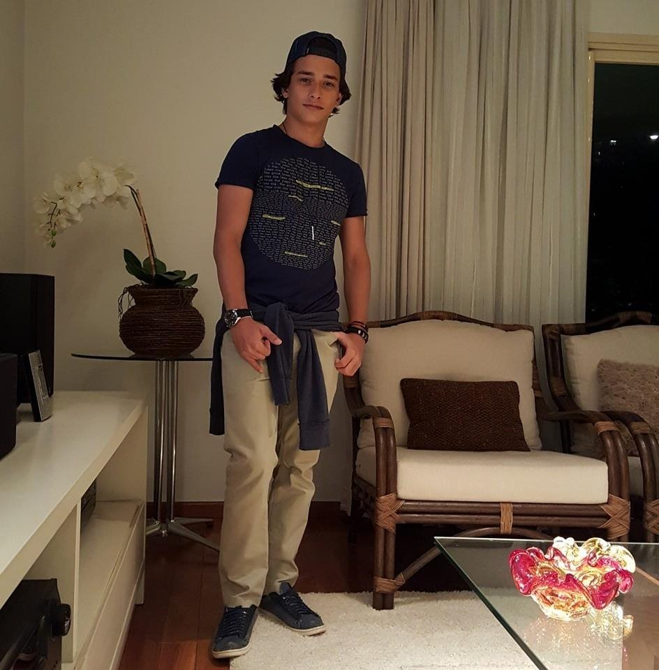

- 

Minha Historia
Meu interesse por engenharia surgiu quando eu era uma criança. Sempre muito desligado, gostava de jogos de construção como Minecraft e The Sims e, não somente isso, sempre tive meu irmão(engenheiro civil) como exemplo, fato este que me motivou muito a cursar Engenharia. Como a grande maioria dos vestibulandos, meu objetivo era passar em uma publica, UNICAMP ou FUVEST.Durante meu ensino médio,fui um menino que se interessava mais em ler um livro de física e de fazer atividades práticas do que de estudar história, foi nesse momento que descobri que o meu interesse fugia um pouco da realidade em nosso pais, o qual tem somente cursos tradicionais na área sendo que o meu desejo era algo a mais. Na metade do meu terceiro colegial, comecei a fazer buscas mais rigorosas a respeito das faculdades e foi quando eu encontrei o insper que meus olhos mudaram completamente de foco , meu sonho passou a ser uma graduação nesta faculdade como um engenheiro ,fato este que no começo do ano eu estava cursando Mauá e logo após receber a noticia de aprovação no Insper, me transferi . Atualmente estou em um curso completamente diferente do paradigma de engenheiro contemporâneo que se encaixa perfeitamente em mim.